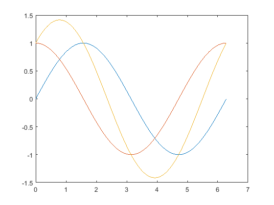
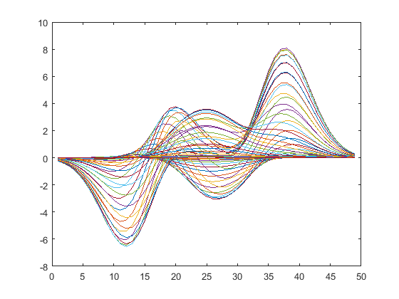
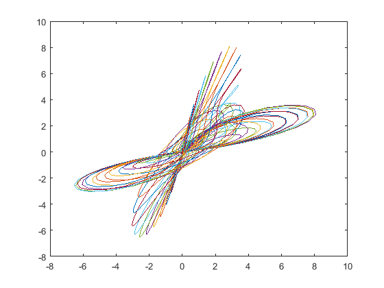

PUBLISH 產出報表
Section可新增區塊
Contents
二維平面繪圖 a
x = linspace(0,2*pi); plot(x,sin(x),x,cos(x),x,sin(x)+cos(x));
二維平面繪圖 b
y = peaks; % 產生一個 49×49 的矩陣
plot(y);
 二維平面繪圖 c
x = peaks; y = x'; % 求矩陣 x 的轉置矩陣 x' plot(x, y); % 取用矩陣 x 的每一行向量，與對應矩陣 y 的每一個行向量作圖